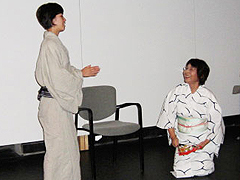
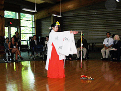
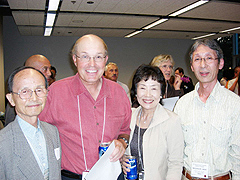
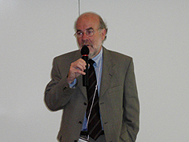

第6回国際森田療法学会がカナダで開催される!
2007年8月23〜25日にかけて、カナダのバンクーバにて第6回国際森田療法学会が、カナダ・ブリティシュコロンビア大学の石山一舟先生の大会長により、ブリティシュコロンビア大学内で開催されました。
当大会の概要は以下のとおり。
概要
- 日 時：2007年8月23日（木）・24日（金）・25日（土）
- 場 所：カナダ・バンクーバ・ブリティシュコロンビア大学キャンパンス
- 大会長：石山一舟（University of British Columbia Education）
- 後 援：日本森田療法学会
公益財団法人メンタルヘルス岡本記念財団
日程と内容
2007年8月23日（木）：プレカンファレンス・イベント
- ソシオドラマ（15:30-16:45）
「森田療法の誕生」
・増野肇（ルーテル学院大学教授）＆
ソシオドラマパフォーマンスチーム

- カルチャーセレモニー
（17:00-18:10）
「神道によるイベント」
・賀陽 濟（かや わたる）氏
（田無神社 宮司）等による
神道イベント

- ウエルカム・レセプション
（18:20-20:30）

- プレカンファレンス講演
「あるがままと神道合気道のかかわり」
・賀陽 濟（田無神社 宮司）他
22007年8月24日（金）：大会1日目
- 開演のあいさつ（8:30-8:50）
・石山一舟（大会長）
・北西憲二
（日本森田療法学会理事長）
・ロブ・ターニー
（UBC大学部長）
・オオツカセイイチロウ
（在バンクーバー日本国総領事館）
・岡本常男
（メンタルヘルス岡本記念財団会長）

- 特別講演（1）（8:50-9:10）
「国際化と森田療法」
・スゥ・チャン（米国文化精神医学協会医学博士） - 基調講演（1）（9:15-10:05）
「日本の精神療法の哲学的・宗教的背景」
・北西憲二（日本森田療法学会理事長） - ゲスト講演（1）（10:20-11:00）
「前近代の自我、現代の自我、無自我
〜伝統と現代文学における日本人の精神性」
・ポール・マッカーシー（駿河台大学博士） - シンポジウム（1）（11:00-12:00）
「森田療法の国際的展望」- 高等教育における森田療法
・ブライアンオガワ（米国ウオッシュボーン大学博士） - ロシアにおける森田療法
・ナタリア・セメノバ
（ロシア連邦健康省モスクワ精神医学調査協会博士） - 英国における森田療法の機会
・デビッド・リチャード（英国ヨーク大学博士）

- 高等教育における森田療法
- 特別講演（2）（13:00-13:20）
「森田療法的カウンセリングの応用例」
・我妻則明（岩手大学教授）
・横山博（生活の発見会） - シンポジウム（2）（13:20-14:35）
「中国における森田療法の現在と未来」- 森田療法の適応
・ジイアン チェン・リュー（中国北京大学精神衛生講座医学博士） - 社会不安障害治療における森田療法の受容考察
・イン ジー・ルゥ＆チン フェン・ジャーン
（中国ズゥボー市第5精神医学病院医学博士） - 中国森田療法の医師と患者の関係
・ハ イン・ジャーン（中国上海メンタルヘルスセンター医学博士） - 中国における森田療法開発のキーポイント
・ワン ホン・シー＆シィン ジェ・ヤン
（中国第4陸軍大学医学博士）
- 森田療法の適応
- 多面的なプレゼンテーション会議（14:50-16:00）
＜セッション1＞テーマ：森田療法の調査研究- 東京慈恵会医科大学第三病院の入院森田療法の統計分析
（1972〜2006）
・舘野歩（東京慈恵会医科大学第三病院医学博士）他 - 不安障害の治療前後の患者の変化
・シン カイ・ジャーン、ダ イウアン・ナン、ズゥ チェン・ワーン
（上海交通大学医学博士） - 性格特徴と合併症におけるパニック障害と全般性不安障害の比較
・矢野勝治（東京慈恵会医科大学第三病院森田療法センター）他 - 慢性抑うつ患者の外来患者の病前性格の研究（第三回目）
・樋之口潤一郎
（東京慈恵会医科大学第三病院森田療法センター病棟長）他
- 地震のトラウマと森田療法
・渡邊直樹（青森県立保険福祉センター医学博士 - ）逆説禅的森田療法〜神経症を維持する方法
・道木秀行（三省会） - 職業的立場の変化の後の森田療法における新しい視点
・井関渉（ディケア＆クリニックホットステーション医学博士） - 浜松医科大学における新しい森田療法の試み
・星野良一（浜松医科大学精神神経医学教室博士）他
- 東京慈恵会医科大学第三病院の入院森田療法の統計分析
- ワークショップ
＜ワークショップ1＞森田療法ケーススーパービジョン（16:15-17:40）
・久保田幹子
（法政大学教授、森田療法センター臨床心理士長）他
＜ワークショップ2＞トラウマへの森田療法の活用（16:15-17:30）
・ペグ・ルバイン（オーストラリアモナッシュ大学医学博士） - イブニングイベント（18:00-20:45）
＜イブニング講演＞（18:00-18:40）- 森田療法における「流れ」と「調和」
・岩田真理（ひがメンタルクリニック） - サイコオンコロジーにおける森田療法の試み
・伊丹仁郎（すばるクリニック医学博士）
- 森田療法における「流れ」と「調和」
- 音楽によるディナーレセプション（18:50-20:45）
22007年8月25日（土）：大会2日目
- シンポジウム（3）（8:50-10:30）
「社会恐怖と社会不安における文化的視点」- 東西アジアの社会恐怖
・ウルフォン・ジレック＆ルイス・ジレックオール
（ブリティシュコロンビア大学医学博士） - 日本における対人恐怖症に対する治療法の2つの背景
・黒木俊秀（九州大学医学博士） - 自己保身と社会関係における森田的・認知行動的見解
・リーン・イーアルデン＆チャールズ・ティー・テイラー
（カナダブリティシュコロンビア大学医学博士）
- 東西アジアの社会恐怖
- 多面的なプレゼンテーション会議（10:45-11:55）
＜セッション3＞テーマ：森田療法と心身医学- アトピー性皮膚炎に対する二週間の集団森田療法
・板村論子（帯津三敬病院医学博士） - 慢性疼痛の集団療法における森田療法の応用
・芦沢健（北仁会旭山病院医学博士） - アトピー性皮膚炎に対する森田療法の適用
・細谷りつこ（細谷皮膚科クリニック医学博士） - 顎関節症に対する森田療法的アプローチの導入法
・石田恵（東京医科歯科大学大学院医歯学総合科医学博士）
- ブリーフセラピーと心理教育をベースにした外来森田療法の新しい試み
・山田秀世（大通公園メンタルクリニック医学博士）他 - 森田療法的アクティブカウンセリングと異文化適用の影響
・石山一舟（カナダブリティシュコロンビア大学博士） - 森田の生活様式：心理学学生の相談の視点
・セレサ・ベンソン
（米国アクロン大学＆ウオッシュボーン大学医学部インターン）
- アトピー性皮膚炎に対する二週間の集団森田療法
- 特別講演（13:00-13:40）
- 抑うつの初期を外来治療で予見する
・シー・リチャード・スペイツ（米国西ミシガン大学博士） - 外来森田療法の本質
・橋本和幸（調布はしもとクリニック医学博士）
- 抑うつの初期を外来治療で予見する
- 基調講演（13:40-14:30）
「森田療法の多面性とカウンセリングへの適用」
・石山一舟（カナダブリティシュコロンビア大学博士） - 特別講演（14:45-15:05）
「ゲシュタルト心理学と森田療法」
・ジョン・フリュー（米国パシフィック大学博士）
・ベグ・リバイン（オーストラリアモナッシュ大学医学博士） - 討議（15:05-16:10）
- 認知行動療法・マインドフルネス・森田療法
・中村敬（東京慈恵会医科大学精神医学教室教授） - 弁証法的行動療法におけるマインドフルネス：森田療法との比較
・ジョン・ワグナー（カナダブリティシュコロンビア大学博士）
- 認知行動療法・マインドフルネス・森田療法
- シンポジウム（4）（16:15-17:00）
「森田療法の展望」
＜日本側＞
・中村敬（東京慈恵会医科大学精神医学教室教授）
・増野肇（ルーテル学院大学教授）
・黒木俊秀（九州大学医学博士）
＜各国側＞
・ナタリア・セメノバ（ロシア連邦健康省モスクワ精神医学調査協会博士）
・ブライアン小川（米国ウオッシュボーン大学博士）
・ベグ・リバイン（オーストラリアモナッシュ大学医学博士）
・シー・リチャード・スペイツ（米国西ミシガン大学博士）
・リーン・イーアルデン（カナダブリティシュコロンビア大学博士）
・ハ イン・ジャーン（中国上海メンタルヘルスセンター医学博士） - 閉会のあいさつ
・北西憲二（日本森田療法学会理事長）
・石山一舟（大会長）